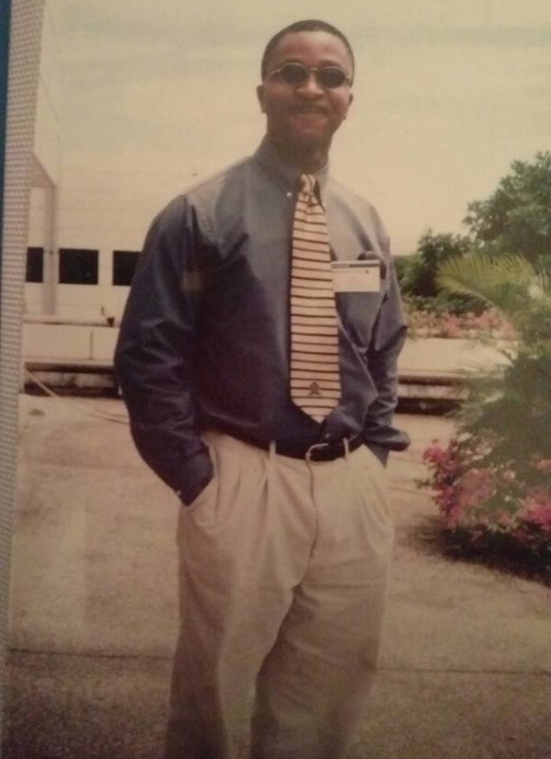
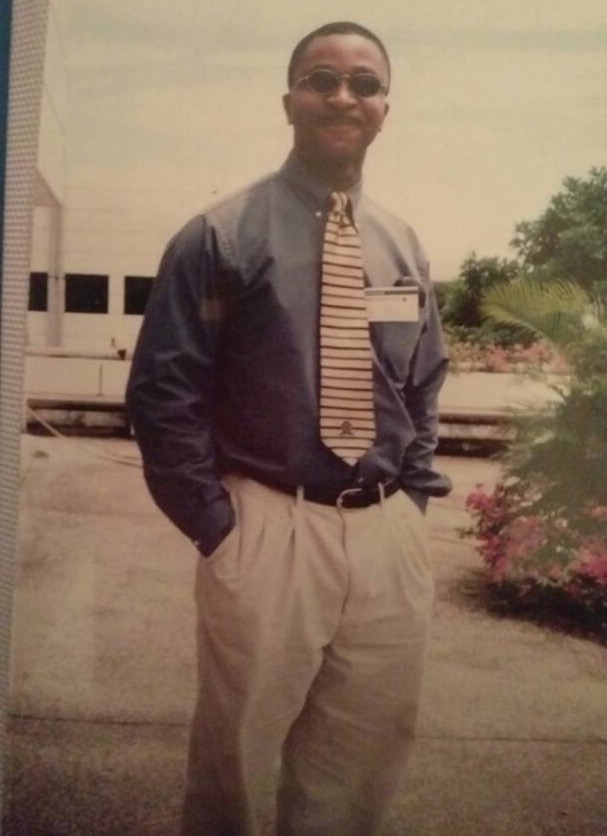

"On the day a man turned 50, he was asked to summarize his life experience so far. After deep reflection, he had this to say 'like most people, I've labored, sacrificed and fought hard for the wealth I desired, now I have wealth, I find myself laboring, sacrificing and fighting hard for happiness, joy and fulfillment. O, how I wish I had invested my time in family which is where I realize now happiness and fulfillment rests.'
Okey, you a man that has always placed your family above everything else, above personal desires. The good you have contributed to the world cannot be measured in words but in deeds for the love you have bestowed unto your family shall be felt in different corners of the world as people interact with your offsprings.
Your blessings are abundant, your prayers answered, happiness, joy and fulfillment is yours. May you have the most incredible 50th year as you celebrate every minute of your journey through life. Happy Birthday" ---- Kingsley Offor
"Okey! My Brother! My friend! My co Inlaw! It is amazing how we hit off from the get go. It probably because you are such a sweet person, and we are both from the same place.
For me you are a family man. The bond between you and your siblings is enviable. I am proud of you. I saw this poem on line and you exemplify these qualities.
OKE you are heaven sent from our father above,
bonded by the power of love. No matter What! you have our backs: when push comes to shove.
You are never demanding,all for one and one for all,
Okey you make family the strongest team, the strongest unit;
if love could be visualized, You make family the blue print.
forgiveness is sweetest fragrance, the power of family is a reflection of God's compassion and magnificence.
You lend a helping hand and not a finger pointing hand which is really great and encouraging.
Happy 50th Birthday my brother. You are indeed a great person . Wish you 50 more years in good spiritual and physical health "---- Chika Offor
'Nwanne eji eje mba' doesn't do enough to capture what Okey means to me - unless you truly translate the parts to English.
The first part means, 'Child of my mother' or what the Americans call 'brother from another mother' - Okey has always been there for me and my family, with his wonderful words of encouragement at key decision points, and his family is just an extension of mine.
The second part means 'reliable warrior on life's journeys' - with Okey as a friend, your journey in life will be made joyful and fruitful, because of his love and fierce loyalty.
Brother, as you turn 50, may your life's journey so far have prepared you for the multitude of Blessings God is preparing to shower on you and your loved ones. Love Always, Chikezie Nwosu.


 
